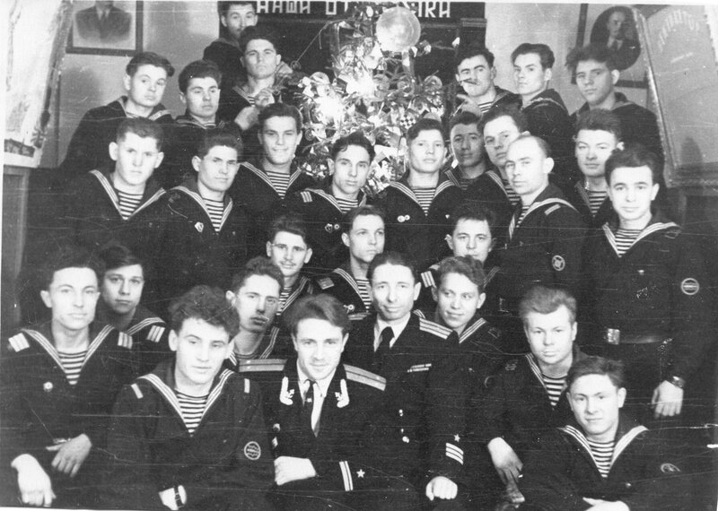

В качестве подарка себе и своим друзьям решил поместить фотографию полувековой давности.

Я не подправлял ее, не ретушировал. Взял так, как она есть. Как в моем альбоме. Встречали Новый 1960 год. Все, кроме вахты, собрались на бербазе, в кубрике команды. На столах - легкие закуски, которые принесли с камбуза плюс некоторые деликатесы из корабельного бортового НЗ. Напитки - традиционные: чай и какао (по случаю праздника) в больших литых алюминиевых чайниках. "Годки" ухитрились заменить в паре чайников напитки на более подобающие этому случаю, но "салаг" это не касалось. Фотографировались по очереди, в две смены, так как весь экипаж в кадр не помещался из-за небольших размеров помещения.
Зима 1959-60 гг. оказалась для экипажа непростой. Командование решилось на смелый эксперимент - сделать средний ремонт дизелей (два Коломенских дизеля по 2000 л.с. каждый) своими силами. Вроде бы на первый взгляд задача не сложная. Мотористы на лодке опытные (служили тогда 4 года), технология ремонта в принципе известна. Но базировалась лодка в Гремихе, никаких гидротехнических сооружений там еще не было и поэтому при каждом усилении неблагоприятного ветра лодки отгоняли от пирсов на якорь, чтобы они не бились одна об другую. А неблагоприятные и сильные ветры там были постоянно. Недаром гимн Гремихи начинался словами: "Потому что не бывает тихо Ни зимой, ни летом - никогда, Город называется Гремиха..." (флотские острословы добавляли здесь одну непечатную строчку: "Я .... такие города") Аккумуляторные батареи были старыми, поэтому при разобранных дизелях и без зарядки с берега на якоре приходилось экономить электричество, а это значит - не включать грелки. Зима на Полярном круге в железной бочке без обогрева наверняка запомнилась морякам С-276 надолго.
Были и другие проблемы. Ввиду того, что базирование, как я уже сказал, было сложным, вырезать над пятым (дизельным) отсеком съемный лист было нельзя. Приходилось снятые втулки цилиндров (почти по 250 кг каждая), их крышки (под 200 кг) и другие детальки вытаскивать наверх вручную через люк седьмого отсека. (Кто хоть раз был на борту "эски" представляет возникающие при этом трудности.) Таким же образом и загружать новые, которые предварительно надо было расконсервировать от густой смазки (это при тридцатиградусном морозе и пронзительном ветре!). У некоторых членов экипажа лодки "морозобоины" на лице сохранились до сих пор. Но все у них получилось. Начальство отчиталось, флотская газета "На страже Заполярья" (звали ее просто "сторож") поместила торжественно-хвалебные очерки, наградили, как полагалось, непричастных и жизнь экипажа вошла в свое обычное русло. Но это будет потом. А на этом снимке - большая часть моряков здесь из БЧ-5 - запечатлен лишь краткий миг между теми непростыми буднями, о которых я рассказал.
С Новым годом!